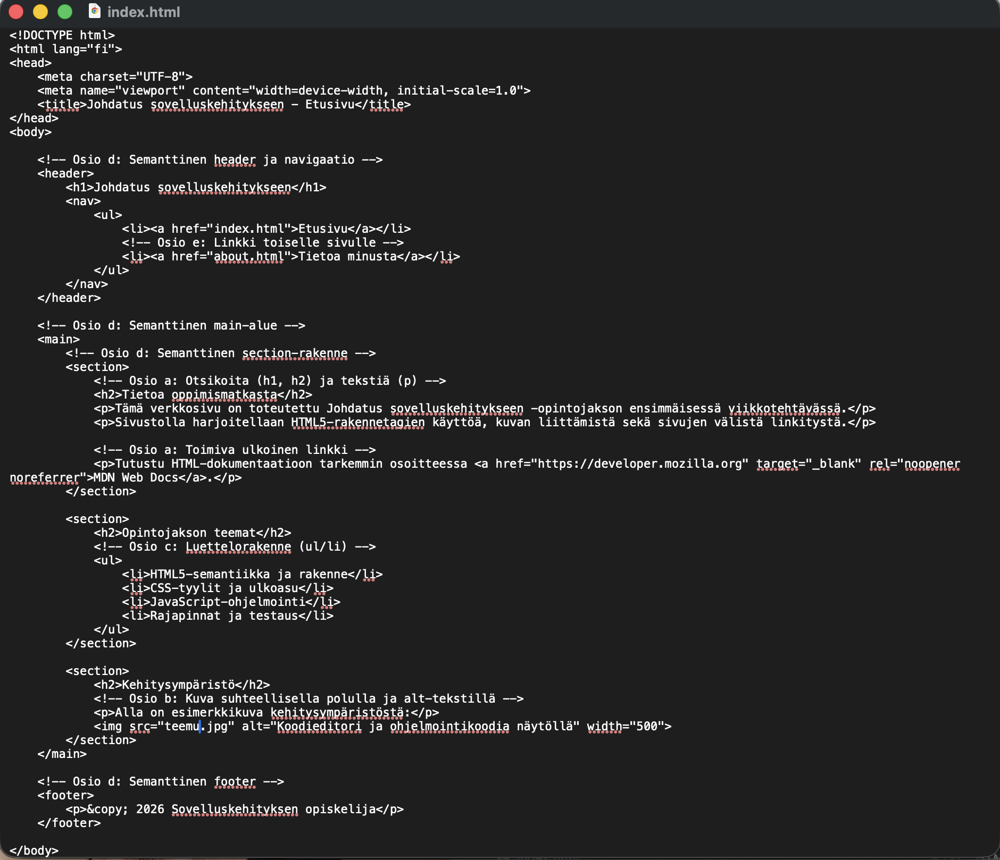

Tietoa oppimismatkasta
Tämä verkkosivu on toteutettu Johdatus sovelluskehitykseen opintojakson ensimmäisessä viikkotehtävässä.
Sivustolla treenataan HTML5-rakennetagien käyttöä, kuvan liittämistä sekä sivujen välistä linkitystä.
Käy tsekkaamassa omat kotisivuni teemukankainen.com.
Opintojakson teemat
- HTML5-semantiikka ja rakenne
- CSS-tyylit ja ulkoasu
- JavaScript-ohjelmointi
- Rajapinnat ja testaus
Kehitysympäristö
Alla on esimerkkikuva kehitysympäristöstä:
